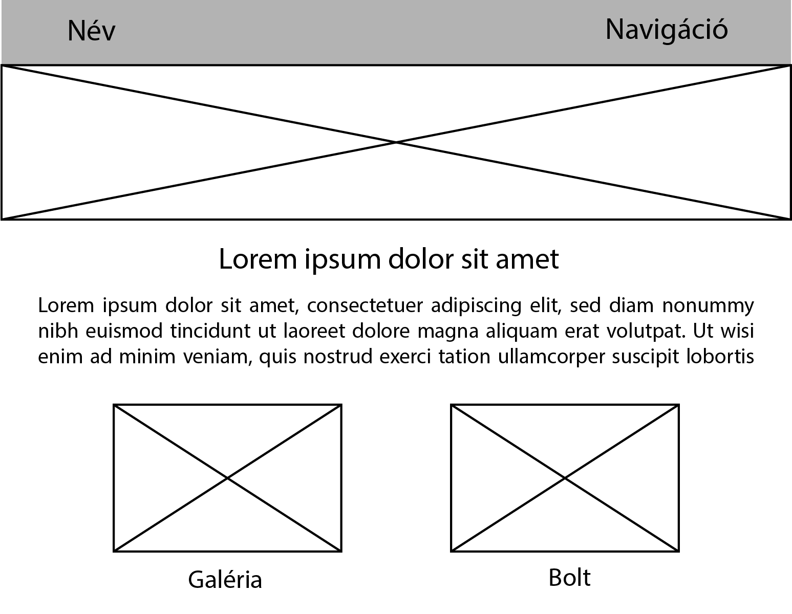
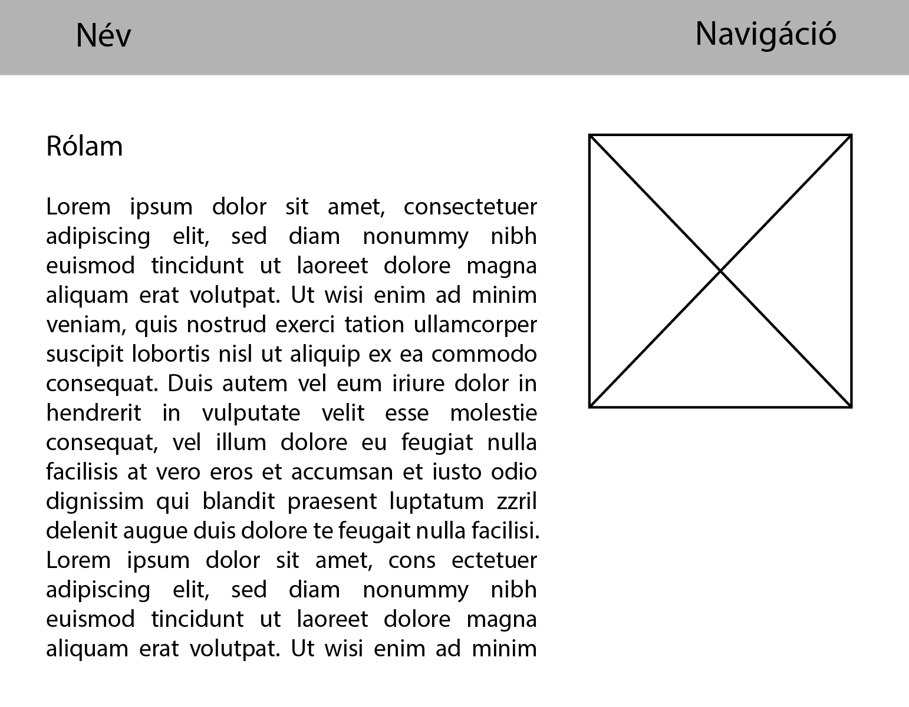
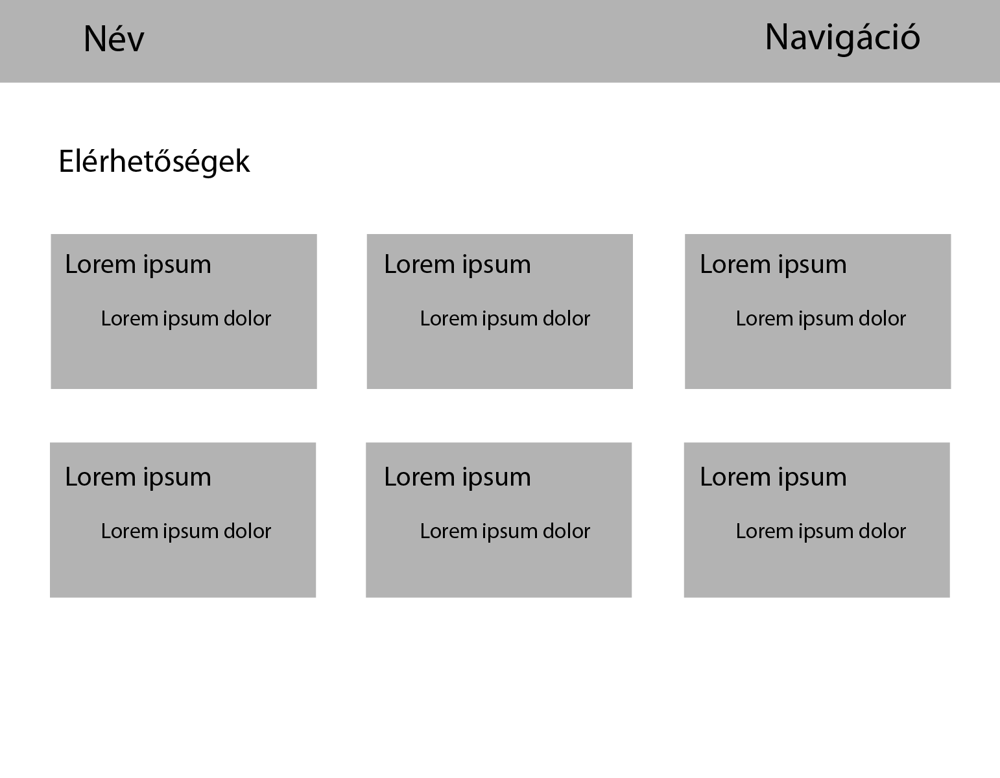
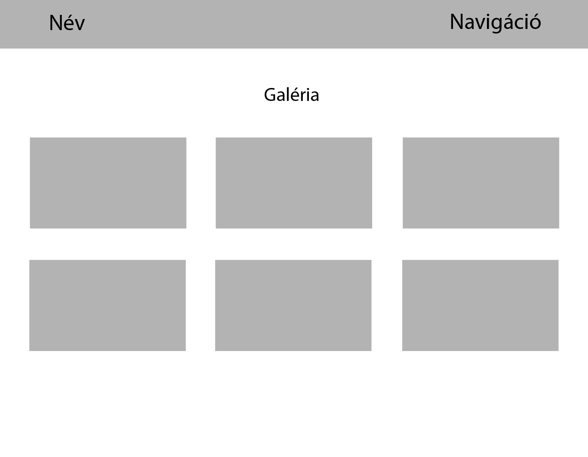
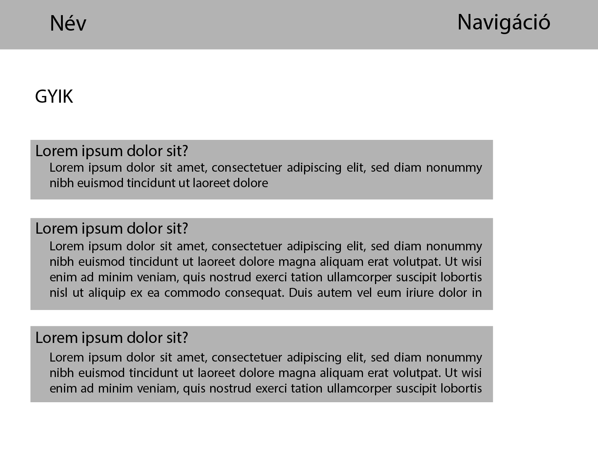
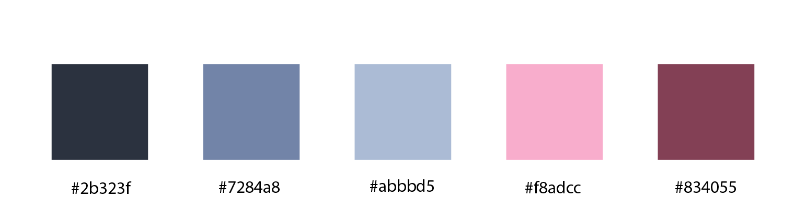

A weboldal terve
A feladatleírás alapján és a saját elképzeléseim szerint ezeket az oldalakat szerettem volna létrehozni:
Kezdőlap
Rólam
Elérhetőségek
Galéria
GYIK
Ez alapján kerestem forrásokat, tutorial videókat. Ez a videó volt a legszimpatikusabb az elrendezés szempontjából. Nem használtam a feltöltött kódot, az egészet a videót követve írtam. Szerettem volna megtartani a „showcase” részt, ezért ehhez kerestem egy képet az unsplash.com oldalon, és ennek a színeit használtam az egész oldalon.
Az ikonokat Adobe Illustratorban készítettem.
Változások
- A kezdőlapon a borítókép helyett a videóban bemutatott "showcase" megoldást választottam. Így nem is kellett a kínosan keskeny képarányban is jól mutató fotót keresnem.
- Szintén a kezdőlapon két ikon helyett hármat használtam, mert így arányosabbnak és esztétikusabbnak néz ki.
- Ennek következtében a GYIK oldalt a fenti navigációs sávból áthelyeztem az ikonok közé.
- Végül a "bolt" ikon helyett egy másikat használtam, ami erre az oldalra irányít, hiszen az egyébként is csak egy külső weboldal linkje lett volna.
- A rólam oldalon hozzáadtam egy dobozt a "mottó" résznek.
- Az elérhetőségeket,mint a GYIK oldalt, végül egymás alatti felsorolással oldottam meg a csempés elrendezés helyett, mert így kicsit átláthatóbb.
- Az eredeti terveim között szerepelt, hogy a galériában a képek nagyíthatóak legyenek, de erre nem találtam működő megoldást JavaScript nélkül.